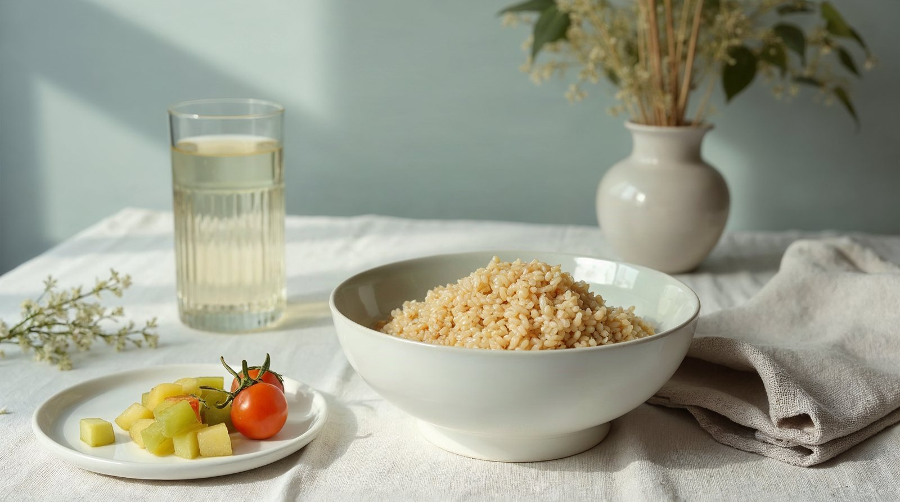
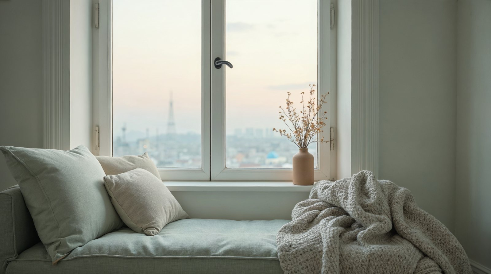

이종호 한의사 감수좋은꿈참사랑한의원 대표원장 (한의사 면허번호 19769)발행 2026-11-26 · 수정 2026-11-26
이 글의 차례
오후가 되면 속옷이 축축하게 느껴져 자꾸 신경이 쓰입니다. 화장실에 갈 때마다 확인하게 되고, 팬티라이너 없이는 외출하기가 불안합니다. 냄새나 가려움은 크지 않은데 양이 많다는 것만으로도 혹시 어디가 잘못된 건 아닐까 걱정이 앞섭니다.
산부인과에서 검사를 받았더니 질염은 아니라는 말을 들었습니다. 안심이 되면서도, 그렇다면 왜 이렇게 냉이 많은지 답을 듣지 못한 기분입니다. 진료실에서 조심스럽게 이 이야기를 꺼내시는 분들이 생각보다 많습니다.
냉은 원래 몸이 질 안을 촉촉하고 깨끗하게 지키기 위해 만들어 내는 분비물입니다. 누구에게나 있고, 생리 주기와 나이, 몸 상태에 따라 양과 모양이 바뀝니다. 그래서 냉이 있다는 것 자체는 걱정할 일이 아니고, 평소와 어떻게 달라졌는지를 보는 것이 중요합니다.
이 글에서는 감염이 아닌데도 냉이 많아지는 이유, 정상 냉과 살펴봐야 할 냉의 차이, 일상에서 바꿔 볼 수 있는 습관, 그리고 한의원에서 함께 살필 수 있는 부분을 정리해 보겠습니다. 반복되는 질염에 대한 이야기는 따로 정리한 글을 함께 읽어 주세요.
정상 냉은 어떤 모습인가요
정상 냉은 맑거나 약간 하얀 색이고, 냄새가 거의 없거나 아주 약합니다. 속옷에 묻었다가 마르면 옅은 노란빛으로 남기도 하는데, 이것도 흔한 일입니다. 가려움이나 따가움, 아픔이 없다면 대개 몸이 제 일을 하고 있는 모습입니다.
양과 모양은 생리 주기를 따라 바뀝니다. 생리가 끝난 직후에는 적고, 배란 무렵에는 달걀흰자처럼 맑고 잘 늘어나며 양이 늘어납니다. 생리 전에는 다시 조금 탁하고 끈적해집니다. 이 흐름을 알고 나면 많아지는 시기가 정상 변화인지 구분하기가 한결 쉬워집니다. 달력에 냉이 많은 날을 표시해 보면 이 흐름이 생각보다 또렷하게 보입니다.
왜 감염이 아닌데도 냉이 많아질까요
호르몬의 영향이 가장 큽니다. 배란 무렵, 임신 중, 피임약을 드시는 동안처럼 여성 호르몬이 많아지는 시기에는 자궁경부에서 나오는 점액이 늘어 냉이 많아집니다. 이것은 몸의 자연스러운 반응입니다.
자궁경부의 상태도 영향을 줍니다. 자궁경부 안쪽의 부드러운 조직이 바깥쪽으로 조금 드러나 있으면 점액이 더 많이 나올 수 있습니다. 이런 경우는 산부인과 검사에서 확인할 수 있어, 냉이 오래 많다면 자궁경부 상태를 한 번 살펴보시길 권합니다.
씻는 습관도 냉의 양을 바꿉니다. 질 안까지 세정제로 자주 씻으면 질을 지키는 좋은 균의 균형이 흐트러지고, 몸은 이를 메우려고 분비물을 더 만들어 냅니다. 깨끗하게 하려던 노력이 오히려 냉을 늘리는 셈입니다.
통풍이 안 되는 환경도 한몫합니다. 꽉 끼는 바지, 합성 섬유 속옷, 하루 종일 붙이는 팬티라이너는 습기와 열을 가둡니다. 오래 앉아 지내는 생활, 땀이 많은 체질도 아랫부분을 늘 축축하게 만듭니다.
한의학에서는 냉이 많은 상태를 대하라고 부르며, 몸의 물길과 차가움, 기운의 흐름과 함께 살펴 왔습니다. 아랫배가 차고 쉽게 붓고 피로한 분, 소화가 약하고 대변이 묽은 분에게서 맑고 묽은 냉이 많은 경우가 흔하다고 보아 온 것입니다. 이것은 진단명이 아니라 진찰에서 몸을 읽기 위해 써 온 전통적인 표현입니다.
살펴봐야 할 냉은 이렇게 나눠 봅니다
색이 달라진 경우
회색빛이나 누런 초록빛, 거품 섞인 냉은 감염의 신호일 수 있습니다. 비린내처럼 냄새가 강해졌다면 세균의 균형이 흐트러진 경우를 떠올립니다. 이런 변화가 있다면 산부인과 검사를 다시 받아 보세요.
모양이 달라진 경우
순두부처럼 하얗게 뭉친 냉과 심한 가려움이 함께 있다면 곰팡이균에 의한 질염을 먼저 생각합니다. 이것도 검사로 확인하고 치료받는 것이 순서입니다.
피가 섞인 경우
생리와 상관없이 냉에 피가 비치거나, 성관계 뒤에 피가 묻어난다면 자궁경부와 자궁 안을 살펴보는 검사가 필요합니다. 폐경 이후의 피 섞인 분비물도 산부인과 검사로 확인하는 갈래입니다.
양만 많은 경우
색과 냄새는 평소와 같고 가려움도 없는데 양만 많다면, 호르몬 시기와 씻는 습관, 옷차림, 몸의 차가움과 피로를 함께 살펴봅니다. 이 글이 주로 다루는 경우입니다.
자궁경부 검사는 언제 받았나요
냉이 오래 많다면 마지막 자궁경부 검사가 언제였는지 함께 떠올려 보세요. 국가 건강검진으로 받는 자궁경부 검사는 냉의 원인을 직접 알려 주지는 않지만, 자궁경부 상태를 정기적으로 확인하는 기본이 됩니다. 시기가 지났다면 이번 기회에 함께 받아 두시길 권합니다.
검사 날에는 하루 이틀 전부터 질 안 세정과 성관계를 피하는 것이 좋다는 안내를 받는 경우가 많습니다. 생리 기간을 피해 날짜를 잡고, 궁금한 점은 메모해 가서 함께 여쭤보세요.

스스로 점검해 보세요
- 냉의 색과 냄새는 평소와 같은가요?
- 가려움이나 따가움, 아픔은 없나요?
- 배란 무렵이나 생리 전에 특히 많아지나요?
- 피임약을 드시거나 임신 중인가요?
- 질 안까지 세정제로 자주 씻으시나요?
- 팬티라이너를 하루 종일 쓰시나요?
- 아랫배가 차고 쉽게 붓거나 피로한가요?
색과 냄새가 평소와 같고 가려움이 없다면 생활 습관부터 바꿔 보시길 권합니다. 몇 주 동안 바꿔 보며 냉의 양이 어떻게 달라지는지 기록해 보세요.
먼저 이렇게 여쭙니다
- 냉이 많아진 것은 언제부터인가요?
- 색, 냄새, 모양은 어떤가요?
- 생리 주기 가운데 언제 특히 많은가요?
- 받은 검사와 그 결과는 어떤가요?
- 씻는 방법과 쓰시는 세정제는 무엇인가요?
- 피임약이나 호르몬 관련 약을 드시나요?
- 손발과 아랫배의 차가움, 붓기, 피로는 어떠신가요?
일상에서 먼저 해 볼 수 있는 것
씻는 것은 바깥쪽만, 미지근한 물로 하루 한 번이면 충분합니다. 질 안을 씻어 내는 세정은 피하고, 향이 강한 세정제나 비누는 쓰지 않거나 줄여 보세요. 씻은 뒤에는 부드러운 수건으로 두드리듯 물기를 닦고, 잠시 말린 뒤 속옷을 입습니다.
속옷은 면 소재로 고르고, 하루에 한 번 이상 갈아입습니다. 냉이 많은 날에는 여벌 속옷을 챙겨 바꿔 입는 편이 팬티라이너를 오래 붙여 두는 것보다 편합니다. 팬티라이너를 쓰신다면 자주 갈고, 밤에는 쓰지 않고 통풍을 시켜 주세요.
옷은 너무 꽉 끼지 않는 바지와 치마를 번갈아 입고, 오래 앉아 일한다면 한 시간에 한 번은 일어나 걸어 주세요. 운동 뒤나 땀을 많이 흘린 날에는 젖은 옷을 오래 입고 있지 않는 것이 좋습니다.
아랫배와 발을 따뜻하게 두는 것도 함께 봅니다. 찬 음료와 날 음식을 줄이고, 허리와 배를 덮는 옷을 입어 주세요. 하루 이삼십 분 걷기로 아랫배와 다리의 흐름을 돕고, 짠 음식과 늦은 야식은 줄여 붓기를 덜어 줍니다.
잠과 피로도 냉과 이어져 있습니다. 잠이 모자라고 지친 시기에 냉이 늘고 질염도 잘 생긴다는 분이 많습니다. 늦게까지 깨어 있는 날이 이어진다면 잠자리에 드는 시간을 조금씩 앞당겨 보세요.
나이와 시기에 따라 달라지는 냉
생리를 막 시작한 청소년기에는 호르몬이 자리를 잡아 가는 동안 냉이 갑자기 많아졌다 줄었다 할 수 있습니다. 처음 보는 냉에 놀라 질 안을 씻어 내려는 경우가 있는데, 바깥쪽만 미지근한 물로 씻도록 알려 주시면 충분합니다.
임신 중에는 호르몬과 혈류가 늘어 냉이 눈에 띄게 많아지는 것이 흔합니다. 다만 맑은 물 같은 분비물이 계속 흐르거나 색과 냄새가 달라졌다면 다니시는 산부인과에 알려 확인받으세요. 출산 뒤와 수유 중에는 반대로 분비물이 줄어 건조함을 느끼는 분도 계십니다.
폐경이 가까워지면 냉의 양은 대체로 줄어들고, 질이 얇아져 가려움이나 따가움이 생기기 쉽습니다. 이 시기에 오히려 냉이 늘거나 색이 달라졌다면 산부인과에서 원인을 확인하는 것이 순서입니다.
운동과 땀이 많은 날
운동을 즐기거나 땀이 많은 분은 아랫부분이 늘 축축해 냉이 많다고 느끼기 쉽습니다. 실제 냉이 늘었다기보다 땀과 습기가 더해진 경우도 많습니다. 운동 뒤에는 젖은 운동복을 바로 갈아입고, 몸에 딱 붙는 레깅스는 오래 입지 않도록 해 보세요.
사우나나 찜질방에 오래 머문 날, 수영장을 다녀온 날에 불편이 커졌다면 그날의 기록에 함께 적어 두세요. 반복되는 상황이 보이면 그 상황만 조금 조정해도 한결 편해집니다.

마음이 쫓기는 시기
시험이나 이직, 가족 일로 마음이 쫓기는 시기에 냉이 늘고 질염도 잦아졌다는 분이 많습니다. 긴장과 잠 부족이 이어지면 몸의 균형이 흔들리고, 평소에는 괜찮던 부분까지 예민해집니다. 이럴 때는 냉만 보지 말고 잠과 끼니부터 다시 세워 보시길 권합니다.
단 음식과 몸의 습기
단 음식과 단 음료를 자주 드시면 질 안의 균형이 흔들리기 쉽다는 이야기가 있습니다. 당뇨가 있거나 혈당이 높다는 말을 들으셨다면 냉과 질염이 잦아질 수 있어, 혈당 관리와 함께 살펴보시길 권합니다.
기름지고 무거운 음식, 늦은 밤의 술자리가 이어진 뒤 몸이 붓고 냉이 늘었다는 분도 계십니다. 한의학에서는 이런 상태를 몸에 습기가 머문 모습으로 설명해 왔습니다. 가볍고 따뜻한 식사, 규칙적인 끼니가 기본입니다.
속옷과 빨래도 다시 봅니다
속옷은 다른 빨래와 따로, 순한 세제로 빨고 충분히 헹궈 주세요. 섬유유연제나 향이 강한 세제가 남아 있으면 피부와 점막이 예민해질 수 있습니다. 햇볕이 잘 드는 곳에서 바싹 말리고, 축축한 채로 서랍에 넣지 않습니다.
잠옷은 너무 조이지 않는 것으로 고르고, 잠잘 때는 속옷을 입지 않거나 헐렁한 면 속옷을 입는 분도 계십니다. 밤사이 아랫부분이 숨을 쉬도록 해 주는 것만으로도 아침의 축축함이 줄었다는 분이 많습니다.
한의원에서 함께 살필 수 있는 경우
산부인과에서 감염과 다른 원인을 확인한 뒤라면 한의원에서도 함께 살필 수 있습니다. 진찰을 마친 뒤 그때의 상태에 맞춰 방법을 고르며, 모든 분께 같은 치료를 드리지는 않습니다.
- 검사는 괜찮은데 맑고 묽은 냉이 많아 속옷이 자주 젖는 경우
- 아랫배와 손발이 차고 쉽게 붓고 피로한 경우
- 소화가 약하고 대변이 묽으며 냉도 함께 많은 경우
- 질염 치료를 마친 뒤에도 냉이 많아 신경이 쓰이는 경우
진찰을 바탕으로 침이나 약침, 필요에 따라 온열 치료를 함께 고려하고, 씻는 습관과 옷차림, 식사를 진료실에서 같이 정리합니다. 필요하다고 판단되면 한약을 고려하며, 한약은 지금 드시는 약을 모두 확인한 뒤 신중하게 정합니다.
산부인과에서 처방받은 약이나 치료가 있다면 임의로 멈추지 마시고 그대로 이어 가 주세요. 임신 중이시거나 임신을 준비 중이시라면 처음에 먼저 알려 주시고 산부인과 선생님과 상의해 주세요.
이렇게 기록해 오시면 상담이 쉬워집니다
- 생리 시작일과 냉이 특히 많았던 날
- 냉의 색, 냄새, 모양의 변화
- 가려움이나 따가움이 있었던 날
- 씻는 방법과 바꿔 본 습관
- 그날의 잠, 피로, 붓기
한 주기, 그러니까 생리 시작일부터 다음 생리 시작일까지 적어 오시면 가장 좋습니다. 주기 안에서 냉이 많아지는 시기가 정상 흐름과 맞는지, 벗어나는지가 함께 보입니다.
걱정을 조금 내려놓으려면
냉에 신경이 쓰이기 시작하면 하루에도 몇 번씩 확인하고, 그럴수록 더 많게 느껴집니다. 확인하는 횟수를 줄이고, 대신 일주일에 한 번 정도 기록을 돌아보는 쪽으로 바꿔 보세요. 흐름을 보면 걱정보다 몸의 리듬이 먼저 보입니다.
냉은 몸을 지키는 분비물이라는 것을 기억해 주세요. 없애야 할 대상이 아니라 알맞은 양으로 돌아오도록 몸의 환경을 다듬는 것이 목표입니다. 그 과정을 진료실에서 함께 살피겠습니다.
이런 증상은 먼저 확인이 필요합니다
- 생리와 상관없이 피가 섞인 분비물이 나오거나 폐경 뒤에 출혈이 있는 경우
- 아랫배 통증이 심해지면서 열이 나고 냄새가 강한 냉이 함께 나오는 경우
이런 신호가 있으면 한의원보다 가까운 병원이나 응급실을 먼저 찾으세요.
함께 읽으면 좋은 글
- 질염이 자꾸 반복되고 냉·대하가 신경 쓰일 때는 무엇을 살피나요?
- 배란통과 배란기 출혈, 생리 사이 아랫배 통증과 피 비침은 어떻게 살피나요?
- 생리 때마다 아랫배가 차고 묵직할 때는 무엇을 먼저 살피나요?
- 피임약을 끊은 뒤 생리가 늦어지거나 주기가 불규칙할 때는 무엇을 살피나요?
- 생리 중에도 한의원 진료를 받을 수 있나요?
여쭙는 것
- 냉이 많아진 것은 언제부터인가요?
- 색, 냄새, 모양은 어떤가요?
- 생리 주기 가운데 언제 특히 많은가요?
생활에서 해 볼 것
- 씻는 것은 바깥쪽만, 미지근한 물로 하루 한 번이면 충분합니다.
- 질 안을 씻어 내는 세정은 피하고, 향이 강한 세정제나 비누는 쓰지 않거나 줄여 보…
- 씻은 뒤에는 부드러운 수건으로 두드리듯 물기를 닦고, 잠시 말린 뒤 속옷을 입습니다.
한의원에서 함께 살필 것
- 검사는 괜찮은데 맑고 묽은 냉이 많아 속옷이 자주 젖는 경우
- 아랫배와 손발이 차고 쉽게 붓고 피로한 경우
- 소화가 약하고 대변이 묽으며 냉도 함께 많은 경우
먼저 확인이 필요한 신호
- 생리와 상관없이 피가 섞인 분비물이 나오거나 폐경 뒤에 출혈이 있는 경우
- 아랫배 통증이 심해지면서 열이 나고 냄새가 강한 냉이 함께 나오는 경우
한눈에 보는 표
| 구분 | 핵심 |
|---|---|
| 여쭙는 것 | 냉이 많아진 것은 언제부터인가요? 색, 냄새, 모양은 어떤가요? |
| 한의원에서 함께 살필 것 | 검사는 괜찮은데 맑고 묽은 냉이 많아 속옷이 자주 젖는 경우 아랫배와 손발이 차고 쉽게 붓고 피로한 경우 |
| 먼저 확인이 필요한 신호 | 생리와 상관없이 피가 섞인 분비물이 나오거나 폐경 뒤에 출혈이 있는 경우 아랫배 통증이 심해지면서 열이 나고 냄새가 강한 냉이 함께 나오는 경우 |
자주 묻는 질문
냉이 많으면 질염인가요?
꼭 그렇지는 않습니다. 색과 냄새가 평소와 같고 가려움이 없다면 호르몬 시기나 생활 습관 때문에 양만 늘어난 경우가 많습니다. 색과 냄새가 달라졌다면 산부인과 검사를 받아 보세요.
질 안까지 씻으면 더 깨끗해지지 않나요?
질 안을 자주 씻어 내면 질을 지키는 좋은 균의 균형이 흐트러져 오히려 냉이 늘거나 질염이 생기기 쉽습니다. 바깥쪽만 미지근한 물로 씻는 것으로 충분합니다.
팬티라이너를 매일 써도 되나요?
자주 갈아 준다면 쓸 수 있지만, 하루 종일 붙여 두면 습기와 열이 갇힙니다. 여벌 속옷으로 갈아입는 방법을 함께 쓰시고, 밤에는 통풍을 시켜 주세요.
피임약을 먹고 냉이 늘었어요.
호르몬의 영향으로 냉이 늘어날 수 있습니다. 불편이 크다면 처방한 선생님과 상의해 주시고, 약을 임의로 멈추지는 마세요.
냉이 많을 때 한약을 먹어도 되나요?
산부인과에서 감염과 다른 원인을 확인한 뒤, 진찰을 바탕으로 필요하다고 판단되면 고려합니다. 드시는 약을 모두 확인하고 신중하게 정하며, 임신 중이거나 준비 중이라면 먼저 알려 주세요.
좋은꿈참사랑한의원은 재진 때 지난번 이야기부터 이어서 여쭙니다. 진료시간과 예약은 오시는 길에서 확인하세요.
어디서 상담받을 수 있나요?
좋은꿈참사랑한의원은 서울 동작구 만양로2길 2 신성빌딩 3층·5층(서울 동작구 상도동, 7호선 상도역 3번 출구 근처)에 있습니다. 한의사 3명(이종호 대표원장, 조영기 수석진료원장, 정원영 진료원장)이 진료합니다. 진료시간은 평일 09:30~20:00(점심 13:00~14:00), 토·일·공휴일 09:30~15:00이며, 방문 전 전화로 확인을 권합니다. 예약은 네이버 예약, 카카오톡 상담, 전화 02-815-7510로 받습니다.
이 글은 일반적인 건강 정보이며 개인의 진단이나 치료를 대신하지 않습니다. 증상이 있거나 복용 중인 약이 있다면 진료를 통해 확인하세요. 치료 효과는 개인마다 다를 수 있습니다.
작성 기준: 일반적으로 알려져 있는 건강 정보를 참고해 정리했습니다(대표원장 감수). 증상 기록은 1~2주 동안 하루 1회, 비슷한 시간에 적어 오시면 지난 상태와 비교하기 쉽습니다.